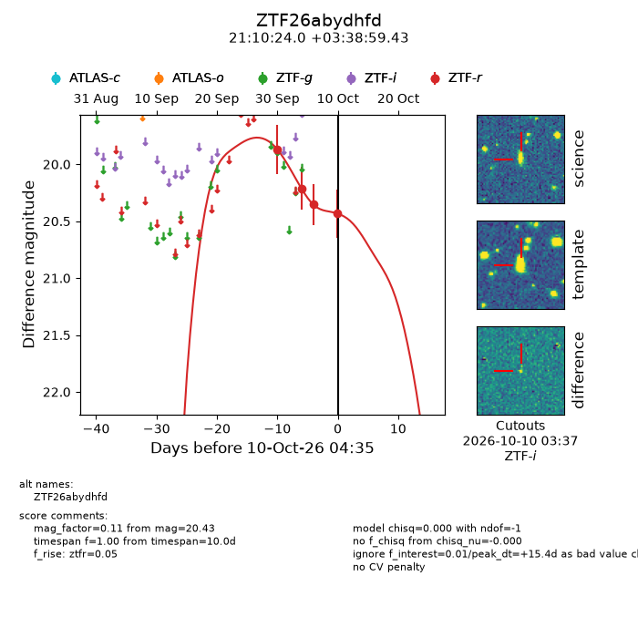
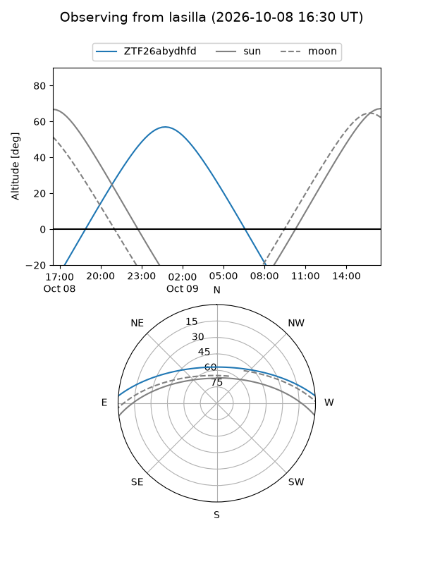
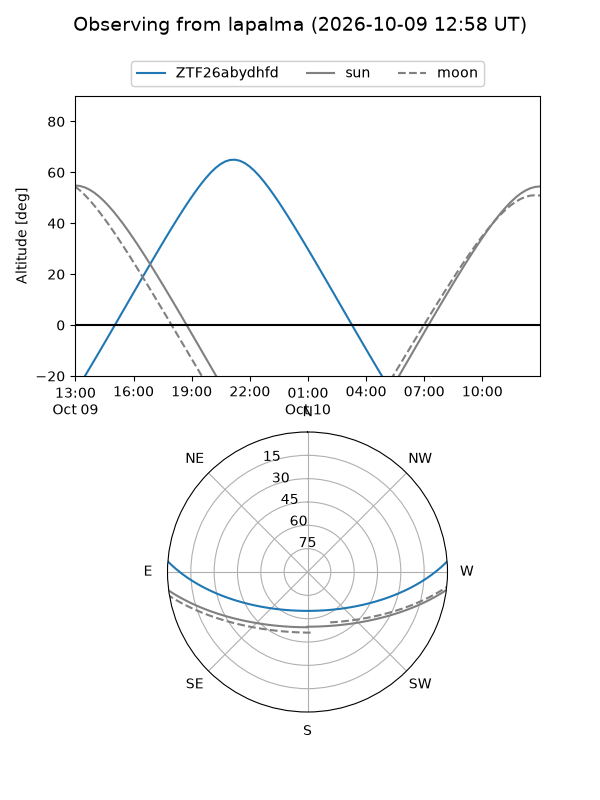
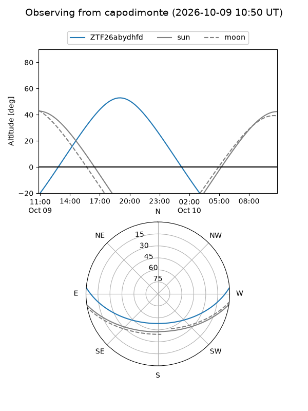
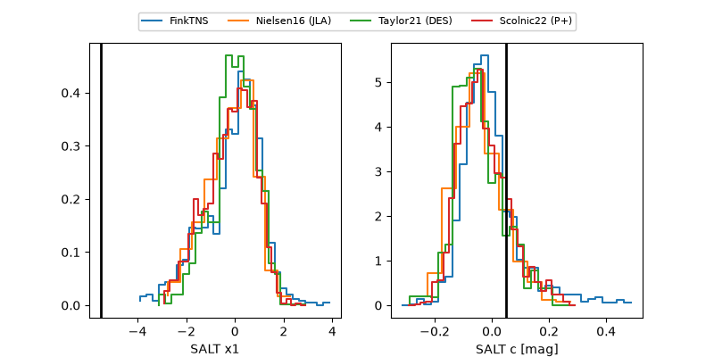

ZTF26abydhfd
Target ZTF26abydhfd at 2026-10-10 04:36
Aliases and brokers:
FINK-ZTF: ztf.fink-portal.org/ZTF26abydhfd
Lasair-ZTF: lasair-ztf.lsst.ac.uk/objects/ZTF26abydhfd
ALeRCE-ZTF: alerce.online/object/ZTF26abydhfd
Direct TNS query: direct search
alt names
ZTF26abydhfd (ztf,fink_ztf)
Coordinates:
equatorial (ra, dec) = 317.6001,+3.64984
equatorial (HMS+DMS) = 21:10:24.02,+03:38:59.43
galactic (l, b) = (54.0037,-28.49712)
Flags:
peak dt: +15.4
Photometry:
last ztfr=20.43
4 ztfr detections
Lightcurve

Visibility



Additional plots
